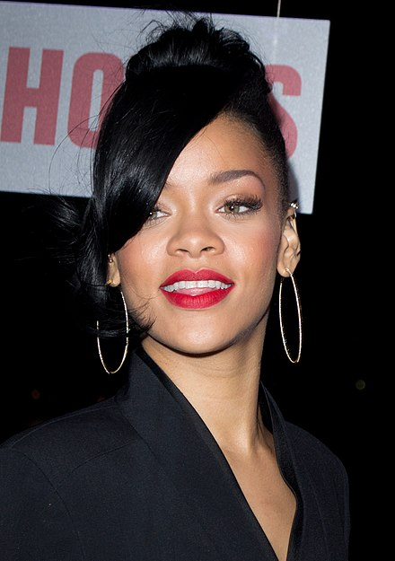
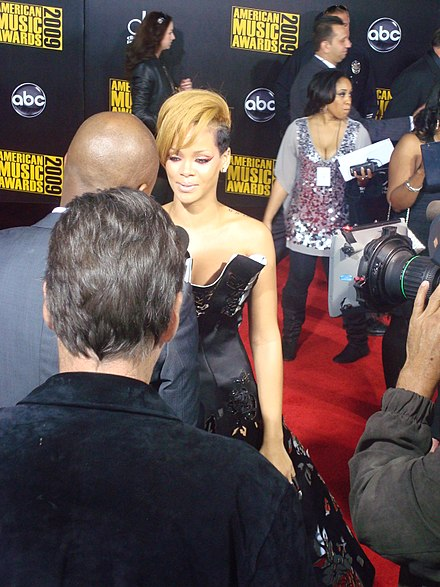

Robyn Rihanna Fenty (/riˈænə/, born 20 February 1988) is a Barbadian singer, businesswoman, diplomat, actress and songwriter. Born in Saint Michaels, Barbados, and raised in Bridgetown, she was discovered by American record producer Evan Rogers in her home country of Barbados in 2003. Throughout 2004, she recorded demo tapes under the direction of Rogers and signed a recording contract with Def Jam Recordings after auditioning for its then-president, hip hop producer and rapper Jay-Z. In 2005, Rihanna rose to fame with the release of her debut studio album Music of the Sun and its follow-up A Girl like Me (2006), which charted on the top 10 of the US Billboard 200 and respectively produced the successful singles "Pon de Replay", "SOS" and "Unfaithful".
Among numerous awards and accolades, Rihanna has won nine Grammy Awards, thirteen American Music Awards and twelve Billboard Music Awards. Furthermore, she was awarded with the inaugural American Music Award for Icon in 2013 and the Michael Jackson Video Vanguard Award in 2016. Rihanna received the Fashion Icon lifetime achievement award from the Council of Fashion Designers of America in 2014. She currently holds six Guinness World Records. In 2012, Forbes ranked her the fourth most powerful celebrity, while Time included her on the annual list of the most influential people in the world in 2012 and 2018.Rihanna was named Harvard University's "Humanitarian of the Year" by the Harvard Foundation in early 2017.She was appointed as an Ambassador on behalf of the government of Barbados in 2018, with her duties involving the promotion of "education, tourism and investment."
Robyn Rihanna Fenty was born on 20 February 1988,[18] in Saint Michael, Barbados. Her mother, Monica (Braithwaite), is a retired accountant of Afro-Guyanese background, and her father, Ronald Fenty, is a warehouse supervisor of Afro-Barbadian and Irish descent. Rihanna has two brothers, Rorrey and Rajad Fenty, and two half-sisters and a half-brother from her father's side, each born to different mothers from his previous relationships. She grew up in a three-bedroom bungalow in Bridgetown and sold clothes with her father in a stall on the street.

Headshot of Rihanna on the red carpet, 2012
Family Life
Rihanna's childhood was deeply affected by her father's addiction to
which contributed to her parents' strained marriage. As a child, she went through a lot of CT scans for the excruciating headaches she suffered: "[The doctors] even thought it was a tumor, because it was that intense." By the time she was fourteen, Rihanna's parents had divorced and her health began to improve.
Music Influences
Rihanna grew up listening to reggae music and began singing at around the age of seven. She attended Charles F. Broome Memorial Primary School and Combermere High School, where she studied alongside future England cricketer Chris Jordan and future West Indies cricketer Carlos Brathwaite. Rihanna was an army cadet in a sub-military programme; the singer-songwriter Shontelle was her drill sergeant. Although she initially wanted to graduate from high school, she chose to pursue a musical career instead.
Public Image
Known for reinventing her style and image, Rihanna's music and fashion sense are noted by the media.In 2009, New York magazine described Rihanna's early look as that of "a cookie-cutter teen queen", noting she has the ability "to shift looks dramatically and with such ease". Around the time of the release of her second studio album, A Girl like Me (2006), many critics felt that Rihanna's style, sound, and musical material were too similar to those of Beyoncé. In an interview with Look magazine, Rihanna spoke about comparisons to Beyonce: "Beyoncé is a great artist and I feel honored to be mentioned in the same sentence, but we're different performers with different styles". She revealed during Oprah's Next Chapter that Def Jam's pop-princess blueprint made her feel claustrophobic during her early years with the label. According to Rihanna, "I felt like they were giving me a blueprint. [...] They had a brand, they had an idea of what they wanted me to be without figuring out who I was." With the release of her third album, Good Girl Gone Bad (2007), Rihanna dismissed her innocent image for an edgier look with a new hairstyle, which was inspired by Charlize Theron's bob cut in the science fiction thriller Æon Flux (2005). She followed the likes of recording artists Janet Jackson and Christina Aguilera who also shed their innocent image for an edgier look and sound.

Rihanna with ET reporter Kevin Frazier at the 2009 American Music Awards
Long Career
Nico Amarca of Highsnobiety magazine wrote "over the course of her now 10-year career, [Rihanna] has undergone one of the most significant aesthetic metamorphoses the world has ever seen".Her image and fashion has changed several times with different hairstyles since the release of her third album.She commented that as a child she "used to watch her [mother] get dressed" and that her love and admiration for fashion started with her mom. When putting together her own wardrobe she stated, "It's become more about taking a risk ... I always look for the most interesting silhouette or something that's a little off." Jess Cartner-Morley of The Guardian wrote that "Rihanna's wardrobe is
The most talked-about
Influential
Dissected
in pop right now" and that whatever she wears "is immediately reproduced on the high street, because it sells". Country singer Miranda Lambert admires Rihanna's fashion and style stating, "I don't necessarily get inspired by the whole no-bra thing, but I love that you never know what she's going to wear. It always keeps you guessing, which makes her sassy and interesting."
Cultural Expectations
In an interview with Alexa Chung during Vogue Festival 2015, Balmain designer Olivier Rousteing praised Rihanna by stylistically comparing her to some of the biggest fashion icons in music history, such as Madonna, David Bowie, Michael Jackson, and Prince. Commenting on the cultural expectation for pop stars to be role models, she said "[being a role model] became more of my job than I wanted it to be. But no, I just want to make music. That's it". In a May 2013 interview with MTV, The Vagina Monologues writer and feminist Eve Ensler praised the singer, saying, "I'm a huge Rihanna fan, I think she has a kind of agency over her sexuality and she's open about her sexuality, she has enormous grace and she's immensely talented."